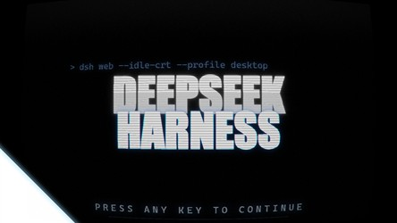
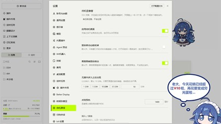
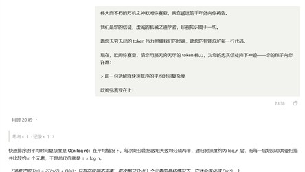
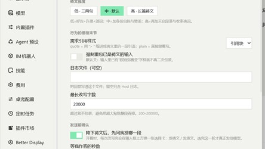
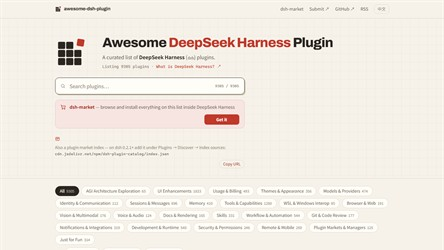

十分钟没人动，页面上盖一块显像管：辉光管、扫描线、一圈灰色扫描。点鼠标、按键、滚一下，它退开。
它不抢焦点，不劫持输入。滚轮只锁滚动，鼠标移动不收起。
dsh plugin --profile desktop add dsh-idle-crt


你发给 DSH 的每一条提示词，在交给模型之前先被改写成一篇万机之神的祷文；回复照样返回。
发不发送由你决定，它不改你的稿子。
客户端与宿主共用一份常量，输出逐字一致。

Host 的 agent/pre-step 钩子。拿到本批次用户消息，只换文本块，不动历史与运行时上下文。
图片、附件、指令原样通过。
另有 --serve：本地反代，绕开会话与审计。
方便，但别当默认通道——它跳过的正是让你能追责的那一层。

纯 Markdown 目录，没有生成步骤。上面两件东西也在这份目录里。
标准三条：能装、能跑、说明写得清楚。没有评分、没有排行、没有「精选」。
© 2026 yuanzephyr · 文字 CC BY 4.0 · 代码 MIT · 没有脚本，没有 Cookie